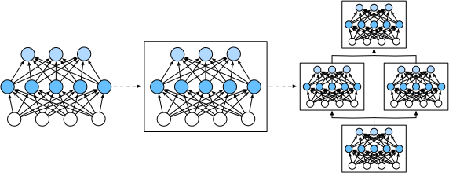

6.1. 层和模块¶
当我们最初介绍神经网络时， 关注的是具有单个输出的线性模型。 在这里，整个模型只由一个神经元组成。 请注意，单个神经元 (i) 接受一组输入； (ii) 产生相应的标量输出； (iii) 具有一组相关参数，这些参数可以更新 以优化某个感兴趣的目标函数。 然后，当我们开始考虑具有多个输出的网络时， 我们利用向量化算术 来刻画整个神经元层。 与单个神经元一样， 层 (i) 接受一组输入， (ii) 产生相应的输出， (iii) 由一组可调参数描述。 当我们研究softmax回归时， 单层本身就是模型。 然而，即使我们随后引入了MLP， 我们仍然可以把模型看作 保留了同样的基本结构。
有趣的是，对于MLP， 整个模型和它的各个组成层 共享这种结构。 整个模型接受原始输入（特征）， 产生输出（预测）， 并拥有参数 （所有组成层的参数合并在一起）。 同样，每个单独的层接收输入 （由前一层提供）， 产生输出（后续层的输入）， 并拥有一组可调参数，这些参数 根据从后续层反向流动的信号进行更新。
你可能会认为神经元、层和模型 已经为我们提供了足够的抽象来完成工作， 但实际上我们常常发现， 谈论那些比单个层更大 但比整个模型更小的组件很方便。 例如，在计算机视觉中非常流行的 ResNet-152 架构拥有数百层。 这些层由层组的重复模式组成。逐层实现这样的网络会变得很繁琐。 这种担忧并非只是假设——这种 设计模式在实践中很常见。 上面提到的 ResNet 架构 在2015年的 ImageNet 和 COCO 计算机视觉竞赛中 于识别和检测两方面均获胜 (He et al., 2016)， 至今仍是许多视觉任务的首选架构。 类似地，把层按各种重复模式排列的架构 如今在其他领域也已无处不在， 包括自然语言处理和语音。
为了实现这些复杂的网络， 我们引入神经网络模块（module）的概念。 一个模块可以描述单个层、 由多个层组成的组件， 或者整个模型本身！ 使用模块抽象的一个好处是， 它们可以组合成更大的构件， 而且常常是递归地组合。图6.1.1 说明了这一点。通过定义按需生成 任意复杂模块的代码， 我们可以写出出奇简洁的代码， 同时仍能实现复杂的神经网络。

图6.1.1 多个层被组合成模块，形成更大模型的重复模式。¶
从编程的角度看，模块由类（class）表示。 它的任何子类都必须定义一个前向传播方法， 把输入变换为输出， 并且必须存储任何必要的参数。 请注意，有些模块根本不需要任何参数。 最后，模块必须拥有反向传播方法， 用于计算梯度。 幸运的是，由于自动微分 （在 2.5节 中介绍过） 在幕后发挥的魔力， 在定义自己的模块时， 我们只需要关心参数 和前向传播方法。
import torch
from torch import nn
from torch.nn import functional as F
from mxnet import np, npx
from mxnet.gluon import nn
npx.set_np()
from typing import List
import jax
from flax import linen as nn
from jax import numpy as jnp
from d2l import jax as d2l
import tensorflow as tf
作为开始，我们回顾 之前用来实现MLP的代码 （5.1节）。 下面的代码生成一个网络， 它有一个包含256个单元、使用ReLU激活的 全连接隐藏层， 后面是一个包含十个单元的全连接输出层 （无激活函数）。
net = nn.Sequential(nn.LazyLinear(256), nn.ReLU(), nn.LazyLinear(10))
X = torch.rand(2, 20)
net(X).shape
在这个例子中，我们通过实例化一个 nn.Sequential
来构造模型，并按照各层应当执行的顺序 把各层作为参数传入。
简而言之，nn.Sequential 定义了一种特殊的 Module， 即 PyTorch
中表示模块的类。 它维护一个由组成 Module 构成的有序列表。
请注意，两个全连接层都是 Linear 类的实例， 而该类本身是 Module
的子类。 前向传播（forward）方法也非常简单：
它把列表中的每个模块依次连结起来， 把每个模块的输出作为下一个的输入。
请注意，到目前为止，我们一直通过 构造 net(X) 来调用模型以获得输出。
这实际上只是 net.__call__(X) 的简写。
net = nn.Sequential()
net.add(nn.Dense(256, activation='relu'))
net.add(nn.Dense(10))
net.initialize()
X = np.random.uniform(size=(2, 20))
net(X).shape
在这个例子中，我们通过实例化一个 nn.Sequential 来构造模型，
并把返回的对象赋给 net 变量。 接着，我们反复调用它的 add 方法，
按照各层应当执行的顺序 追加各层。 简而言之，nn.Sequential
定义了一种特殊的 Block， 即 Gluon 中表示模块的类。
它维护一个由组成 Block 构成的有序列表。 add 方法只是把每个后续
Block 方便地添加到列表中。 请注意，每个层都是 Dense 类的实例，
而该类本身是 Block 的子类。
前向传播（forward）方法也非常简单： 它把列表中的每个 Block
依次连结起来， 并把它的输出作为下一个的输入。
请注意，到目前为止，我们一直通过 构造 net(X) 来调用模型以获得输出。
这实际上只是 net.forward(X) 的简写， 是通过 Block 类的
__call__ 方法 实现的一个巧妙的 Python 技巧。
net = nn.Sequential([nn.Dense(256), nn.relu, nn.Dense(10)])
# get_key is a d2l saved function returning jax.random.PRNGKey(random_seed)
X = jax.random.uniform(d2l.get_key(), (2, 20))
params = net.init(d2l.get_key(), X)
net.apply(params, X).shape
net = tf.keras.models.Sequential([
tf.keras.layers.Dense(256, activation=tf.nn.relu),
tf.keras.layers.Dense(10),
])
X = tf.random.uniform((2, 20))
net(X).shape
在这个例子中，我们通过实例化一个 keras.models.Sequential
来构造模型，并按照各层应当执行的顺序 把各层作为参数传入。
简而言之，Sequential 定义了一种特殊的 keras.Model， 即 Keras
中表示模块的类。 它维护一个由组成 Model 构成的有序列表。
请注意，两个全连接层都是 Dense 类的实例， 而该类本身是 Model
的子类。 前向传播（call）方法也非常简单：
它把列表中的每个模块依次连结起来， 把每个模块的输出作为下一个的输入。
请注意，到目前为止，我们一直通过 构造 net(X) 来调用模型以获得输出。
这实际上只是 net.call(X) 的简写， 是通过模块类的 __call__ 方法
实现的一个巧妙的 Python 技巧。
6.1.1. 自定义模块¶
也许培养“模块如何工作”这一直觉 最容易的方法，就是自己实现一个模块。 在动手之前， 我们简要总结一下每个模块必须提供的 基本功能：
把输入数据作为其前向传播方法的参数来接收。
通过让前向传播方法返回一个值来生成输出。请注意，输出的形状可能与输入不同。例如，上面模型中的第一个全连接层接收任意维度的输入，但返回维度为256的输出。
计算其输出关于其输入的梯度，这可以通过反向传播方法访问。通常这是自动发生的。
存储并提供执行前向传播计算所需的参数。
按需初始化模型参数。
在下面的代码片段中， 我们从零编写一个模块，
它对应一个具有256个隐藏单元的单隐藏层MLP 和一个10维输出层。
请注意，下面的 MLP 类继承了表示模块的类。 我们将大量依赖父类的方法，
自己只提供构造函数（Python中的 __init__ 方法）和前向传播方法。
class MLP(nn.Module):
def __init__(self):
# Call the constructor of the parent class nn.Module to perform
# the necessary initialization
super().__init__()
self.hidden = nn.LazyLinear(256)
self.out = nn.LazyLinear(10)
# Define the forward propagation of the model, that is, how to return the
# required model output based on the input X
def forward(self, X):
return self.out(F.relu(self.hidden(X)))
class MLP(nn.Block):
def __init__(self):
# Call the constructor of the MLP parent class nn.Block to perform
# the necessary initialization
super().__init__()
self.hidden = nn.Dense(256, activation='relu')
self.out = nn.Dense(10)
# Define the forward propagation of the model, that is, how to return the
# required model output based on the input X
def forward(self, X):
return self.out(self.hidden(X))
class MLP(nn.Module):
def setup(self):
# Define the layers
self.hidden = nn.Dense(256)
self.out = nn.Dense(10)
# Define the forward propagation of the model, that is, how to return the
# required model output based on the input X
def __call__(self, X):
return self.out(nn.relu(self.hidden(X)))
class MLP(tf.keras.Model):
def __init__(self):
# Call the constructor of the parent class tf.keras.Model to perform
# the necessary initialization
super().__init__()
self.hidden = tf.keras.layers.Dense(units=256, activation=tf.nn.relu)
self.out = tf.keras.layers.Dense(units=10)
# Define the forward propagation of the model, that is, how to return the
# required model output based on the input X
def call(self, X):
return self.out(self.hidden((X)))
让我们先关注前向传播方法。 请注意，它以 X 为输入，
计算应用激活函数后的隐藏表示， 并输出其 logits。 在这个 MLP 实现中，
两个层都是实例变量。 为了理解为什么这样做是合理的，设想
实例化两个MLP，net1 和 net2， 并在不同数据上训练它们。
自然，我们会期望它们 代表两个不同的学习得到的模型。
我们在构造函数中 实例化MLP的各层 并在随后调用这些层，
每次调用前向传播方法时都会这样做。 请注意几个关键细节。 首先，我们定制的
__init__ 方法 通过 super().__init__() 调用父类的 __init__
方法， 省去了我们重述适用于大多数模块的 样板代码的麻烦。
然后我们实例化两个全连接层， 把它们分别赋给 self.hidden 和
self.out。 请注意，除非我们实现一个新的层，
否则不必操心反向传播方法 或参数初始化。 系统会自动生成这些方法。
我们来试一试。
net = MLP()
net(X).shape
net = MLP()
net.initialize()
net(X).shape
net = MLP()
params = net.init(d2l.get_key(), X)
net.apply(params, X).shape
net = MLP()
net(X).shape
模块抽象的一个关键优点是其通用性。 我们可以子类化模块来创建层
（例如全连接层类）、 整个模型（例如上面的 MLP 类），
或各种中等复杂度的组件。 在接下来的各章中，我们会利用这种通用性，
例如在处理卷积神经网络时。
6.1.2. 顺序模块¶
现在我们可以更仔细地看看 Sequential 类是如何工作的。
回想一下，Sequential 的设计目的 是把其他模块依次连结起来。
要构建我们自己简化的 MySequential， 我们只需定义两个关键方法：
一个把一个模块逐个追加到列表中的方法。
一个前向传播方法，按模块被追加的相同顺序让输入依次通过模块链。
下面的 MySequential 类 提供了与默认 Sequential 类相同的功能。
class MySequential(nn.Module):
def __init__(self, *args):
super().__init__()
for idx, module in enumerate(args):
self.add_module(str(idx), module)
def forward(self, X):
for module in self.children():
X = module(X)
return X
在 __init__ 方法中，我们通过调用 add_modules
方法添加每个模块。这些模块之后可以通过 children 方法访问。
这样系统就知道添加了哪些模块， 并会正确地初始化每个模块的参数。
class MySequential(nn.Block):
def add(self, block):
# Here, block is an instance of a Block subclass, and we assume that
# it has a unique name. We save it in the member variable _children of
# the Block class, and its type is OrderedDict. When the MySequential
# instance calls the initialize method, the system automatically
# initializes all members of _children
self._children[block.name] = block
def forward(self, X):
# OrderedDict guarantees that members will be traversed in the order
# they were added
for block in self._children.values():
X = block(X)
return X
add 方法把单个块 添加到有序字典 _children 中。
你可能会问，为什么每个 Gluon Block 都拥有一个 _children 属性，
以及为什么我们使用它， 而不是自己定义一个 Python 列表。
简而言之，_children 的主要优点是： 在块的参数初始化过程中， Gluon
知道要查看 _children 字典内部， 找到那些参数也需要初始化的子块。
class MySequential(nn.Module):
modules: List
def __call__(self, X):
for module in self.modules:
X = module(X)
return X
class MySequential(tf.keras.Model):
def __init__(self, *args):
super().__init__()
self.modules = args
def call(self, X):
for module in self.modules:
X = module(X)
return X
当调用 MySequential 的前向传播方法时，
每个添加的模块都按照它们被添加的顺序执行。 现在我们可以使用
MySequential 类 重新实现一个MLP。
net = MySequential(nn.LazyLinear(256), nn.ReLU(), nn.LazyLinear(10))
net(X).shape
net = MySequential()
net.add(nn.Dense(256, activation='relu'))
net.add(nn.Dense(10))
net.initialize()
net(X).shape
net = MySequential([nn.Dense(256), nn.relu, nn.Dense(10)])
params = net.init(d2l.get_key(), X)
net.apply(params, X).shape
net = MySequential(
tf.keras.layers.Dense(units=256, activation=tf.nn.relu),
tf.keras.layers.Dense(10))
net(X).shape
请注意，这里对 MySequential 的用法 与我们之前为 Sequential
类编写的代码相同 （如 5.1节 所述）。
6.1.3. 在前向传播方法中执行代码¶
Sequential 类使模型构造变得容易， 让我们不必定义自己的类
就能组装新的架构。 然而，并非所有架构都是简单的依次连结。
当需要更大的灵活性时， 我们就需要定义自己的块。
例如，我们可能希望在前向传播方法中 执行 Python 的控制流。
此外，我们可能希望执行 任意的数学运算，
而不是仅仅依赖预定义的神经网络层。
你可能已经注意到，到目前为止， 我们网络中的所有操作 都作用于网络的激活值
及其参数。 然而，有时我们可能希望 加入一些既不是前面层的结果、
也不是可更新参数的项。 我们称这些项为常数参数（constant
parameter）。 例如，假设我们想要一个层， 它计算函数
\(f(\mathbf{x},\mathbf{w}) = c \cdot \mathbf{w}^\top \mathbf{x}\)，
其中 \(\mathbf{x}\) 是输入，\(\mathbf{w}\) 是我们的参数，
\(c\) 是某个指定的常数， 在优化过程中不被更新。 于是我们实现一个
FixedHiddenMLP 类如下。
class FixedHiddenMLP(nn.Module):
def __init__(self):
super().__init__()
# Random weight parameters that will not compute gradients and
# therefore keep constant during training
self.rand_weight = torch.rand((20, 20))
self.linear = nn.LazyLinear(20)
def forward(self, X):
X = self.linear(X)
X = F.relu(X @ self.rand_weight + 1)
# Reuse the fully connected layer. This is equivalent to sharing
# parameters with two fully connected layers
X = self.linear(X)
# Control flow
while X.abs().sum() > 1:
X /= 2
return X.sum()
class FixedHiddenMLP(nn.Block):
def __init__(self):
super().__init__()
# Random weight parameters created with the get_constant method
# are not updated during training (i.e., constant parameters)
self.rand_weight = self.params.get_constant(
'rand_weight', np.random.uniform(size=(20, 20)))
self.dense = nn.Dense(20, activation='relu')
def forward(self, X):
X = self.dense(X)
# Use the created constant parameters, as well as the relu and dot
# functions
X = npx.relu(np.dot(X, self.rand_weight.data()) + 1)
# Reuse the fully connected layer. This is equivalent to sharing
# parameters with two fully connected layers
X = self.dense(X)
# Control flow
while np.abs(X).sum() > 1:
X /= 2
return X.sum()
class FixedHiddenMLP(nn.Module):
# Random weight parameters that will not compute gradients and
# therefore keep constant during training
rand_weight: jnp.array = jax.random.uniform(d2l.get_key(), (20, 20))
def setup(self):
self.dense = nn.Dense(20)
def __call__(self, X):
X = self.dense(X)
X = nn.relu(X @ self.rand_weight + 1)
# Reuse the fully connected layer. This is equivalent to sharing
# parameters with two fully connected layers
X = self.dense(X)
# Control flow
while jnp.abs(X).sum() > 1:
X /= 2
return X.sum()
class FixedHiddenMLP(tf.keras.Model):
def __init__(self):
super().__init__()
self.flatten = tf.keras.layers.Flatten()
# Random weight parameters created with tf.constant are not updated
# during training (i.e., constant parameters)
self.rand_weight = tf.constant(tf.random.uniform((20, 20)))
self.dense = tf.keras.layers.Dense(20, activation=tf.nn.relu)
def call(self, inputs):
X = self.flatten(inputs)
# Use the created constant parameters, as well as the relu and
# matmul functions
X = tf.nn.relu(tf.matmul(X, self.rand_weight) + 1)
# Reuse the fully connected layer. This is equivalent to sharing
# parameters with two fully connected layers
X = self.dense(X)
# Control flow
while tf.reduce_sum(tf.math.abs(X)) > 1:
X /= 2
return tf.reduce_sum(X)
在这个模型中， 我们实现了一个隐藏层，其权重
（self.rand_weight）在实例化时随机初始化， 此后保持不变。
这个权重不是模型参数， 因此永远不会被反向传播更新。
接着，网络把这个“固定”层的输出 通过一个全连接层。
请注意，在返回输出之前， 我们的模型做了一件不寻常的事。 我们运行了一个
while 循环，检验 它的 \(\ell_1\) 范数是否大于 \(1\)，
并把输出向量除以 \(2\)， 直到满足条件。 最后，我们返回 X
中各元素之和。 据我们所知，没有任何标准神经网络 会执行这种操作。
请注意，这个特定操作在任何真实任务中 可能都没有用。
我们的目的只是向你展示如何 把任意代码集成到神经网络计算的流程中。
net = FixedHiddenMLP()
net(X)
net = FixedHiddenMLP()
net.initialize()
net(X)
net = FixedHiddenMLP()
params = net.init(d2l.get_key(), X)
net.apply(params, X)
net = FixedHiddenMLP()
net(X)
我们可以混合搭配各种 组装模块的方式。 在下面的例子中，我们以一些有创意的方式 嵌套模块。
class NestMLP(nn.Module):
def __init__(self):
super().__init__()
self.net = nn.Sequential(nn.LazyLinear(64), nn.ReLU(),
nn.LazyLinear(32), nn.ReLU())
self.linear = nn.LazyLinear(16)
def forward(self, X):
return self.linear(self.net(X))
chimera = nn.Sequential(NestMLP(), nn.LazyLinear(20), FixedHiddenMLP())
chimera(X)
class NestMLP(nn.Block):
def __init__(self, **kwargs):
super().__init__(**kwargs)
self.net = nn.Sequential()
self.net.add(nn.Dense(64, activation='relu'),
nn.Dense(32, activation='relu'))
self.dense = nn.Dense(16, activation='relu')
def forward(self, X):
return self.dense(self.net(X))
chimera = nn.Sequential()
chimera.add(NestMLP(), nn.Dense(20), FixedHiddenMLP())
chimera.initialize()
chimera(X)
class NestMLP(nn.Module):
def setup(self):
self.net = nn.Sequential([nn.Dense(64), nn.relu,
nn.Dense(32), nn.relu])
self.dense = nn.Dense(16)
def __call__(self, X):
return self.dense(self.net(X))
chimera = nn.Sequential([NestMLP(), nn.Dense(20), FixedHiddenMLP()])
params = chimera.init(d2l.get_key(), X)
chimera.apply(params, X)
class NestMLP(tf.keras.Model):
def __init__(self):
super().__init__()
self.net = tf.keras.Sequential()
self.net.add(tf.keras.layers.Dense(64, activation=tf.nn.relu))
self.net.add(tf.keras.layers.Dense(32, activation=tf.nn.relu))
self.dense = tf.keras.layers.Dense(16, activation=tf.nn.relu)
def call(self, inputs):
return self.dense(self.net(inputs))
chimera = tf.keras.Sequential()
chimera.add(NestMLP())
chimera.add(tf.keras.layers.Dense(20))
chimera.add(FixedHiddenMLP())
chimera(X)
6.1.4. 小结¶
单个层可以是模块。 许多层可以组成一个模块。 许多模块可以组成一个模块。
模块可以包含代码。
模块负责大量琐碎的日常事务，包括参数初始化和反向传播。
层和模块的顺序连结由 Sequential 模块处理。
6.1.5. 练习¶
如果把
MySequential改成用 Python 列表存储模块，会出现什么样的问题？实现一个以两个模块为参数的模块，比如
net1和net2，并在前向传播中返回两个网络连结后的输出。这也称为并行模块（parallel module）。假设你想连结同一个网络的多个实例。实现一个工厂函数，生成同一个模块的多个实例，并据此构建一个更大的网络。